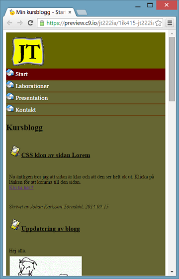

När man surfar in på sidan nu med en mobil så möts man av detta utseende. Det var lite krångel och mickel för att få till det men överlag är jag nöjd. Mitt resonemang var att ta bort allt det som inte jag kände behövdes ses i den mobila varianten, men självfallet så det inte stör hela helheten av sidan. Drog ner bilder, styrde om lite av typsnittens storlek, tog bort stora feta h1 i toppen tex.
Nu äntligen tror jag att sidan är klar och att den ser helt ok ut. Klicka på länken för att komma till den sidan. Klicka här!!
Nu ska jag diktera mitt första blogginlägg på denna sida. Satt länge och tänkte på vad jag skulle skriva om jag skulle skriva eller kopiera in Lorem text. Svaret blev alltså att jag kommer att försöka skriva några rader som förstärker mitt mål med denna utbildning. Jag har under många år tänkte söka denna utbildningen just för att den är precis allt jag önskar få med mig i ryggsäcken inför kommande utmaningar. När jag nu samlat på mig tillräckligt med erfarenhet att söka känns det UNDERBART. Lyckan när jag såg antagningsbrevet med ordet ANTAGEN i grön skimrande text på sidan gjorde mig så glad. De första veckorna har varit bra på utbildningen, visst stressigt lite grann men bara bra. Lärarna och mina klasskamrater är alla väldigt inspirerande att samtala med ang problem och andra saker. Näha, nu är det bara att fortsätta med C# kursen. En kurs som jag tycker är superolig men ganska klurig, men det gäller att knäcka mönstret så ska det gå bra. Bara att nöta på som en vis man sa :-). Hoppas att alla får en fantastisk dag och inte funderar så mycket över valet igår, det gör inte jag. Hej hopp från mig
Här kommer en video trailer. Stort tack till
Big Bunny Bucket
http://www.bigbuckbunny.org/"